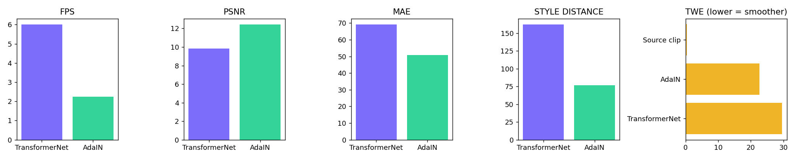
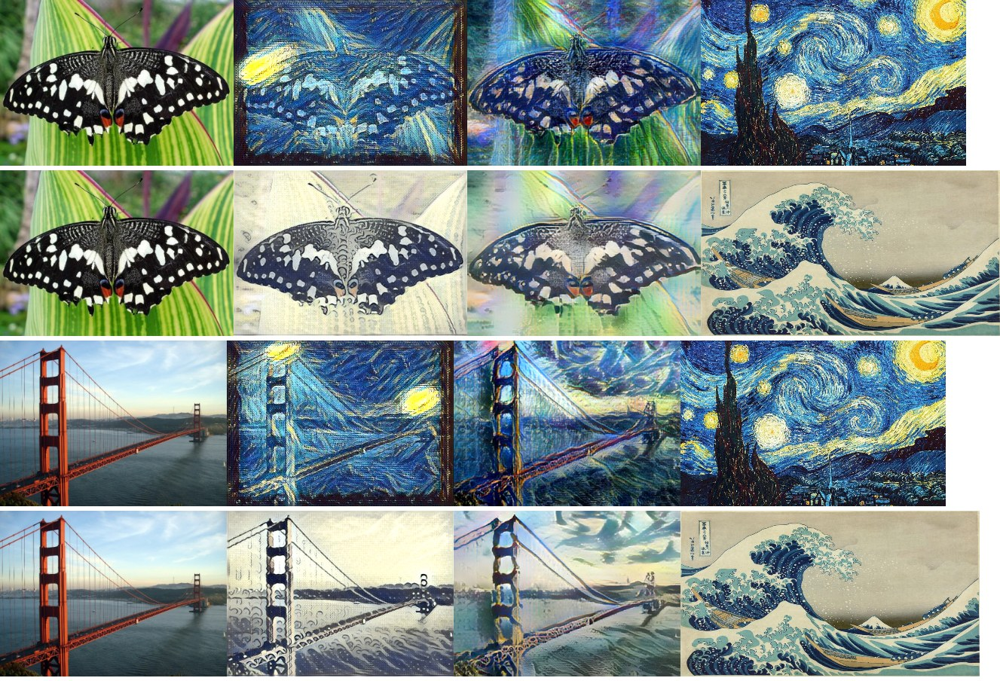

Device: cpu · inference size 384px · 4 content images × 2 styles. PSNR/MAE/LPIPS measure content preservation (vs the content photo). Style distance is the AdaIN style loss to the painting (lower = closer). TWE is the optical-flow-aligned temporal warping error (lower = less flicker).
| method | fps | psnr | mae | lpips | style_distance |
|---|---|---|---|---|---|
| TransformerNet (fixed) | 6.0132 | 9.8475 | 69.2399 | None | 162.398 |
| AdaIN (arbitrary) | 2.234 | 12.447 | 50.718 | None | 76.6124 |


| method | twe_mae | pairs | note |
|---|---|---|---|
| TransformerNet (starry-night), per-frame | 29.624597311019897 | 40 | |
| AdaIN (any style), per-frame | 22.65150303840637 | 40 | |
| ReCoNet (temporal training) | 0.057313659321516754 | 40 | DEGENERATE: output is near-constant (pixel std 1.28); TWE not meaningful |
| Source clip (no stylization, reference) | 0.40381943732500075 | 40 |
| content | style | method | fps | psnr | mae | lpips | style_distance |
|---|---|---|---|---|---|---|---|
| butterfly.jpg | starry-night | fixed | 5.915 | 9.825 | 66.927 | None | 191.375 |
| butterfly.jpg | starry-night | adain | 2.369 | 11.86 | 51.668 | None | 91.1042 |
| butterfly.jpg | wave | fixed | 6.01 | 9.034 | 77.992 | None | 153.425 |
| butterfly.jpg | wave | adain | 2.141 | 10.718 | 62.432 | None | 69.5592 |
| golden.jpg | starry-night | fixed | 6.112 | 8.79 | 73.258 | None | 184.1784 |
| golden.jpg | starry-night | adain | 2.18 | 11.899 | 49.904 | None | 51.8932 |
| golden.jpg | wave | fixed | 5.811 | 12.891 | 45.061 | None | 132.1561 |
| golden.jpg | wave | adain | 1.787 | 14.0 | 39.535 | None | 79.2905 |
| hoover.jpg | starry-night | fixed | 7.336 | 10.099 | 60.886 | None | 184.0129 |
| hoover.jpg | starry-night | adain | 2.6 | 13.005 | 45.552 | None | 63.9905 |
| hoover.jpg | wave | fixed | 6.481 | 6.353 | 111.063 | None | 133.2868 |
| hoover.jpg | wave | adain | 2.937 | 9.112 | 80.687 | None | 98.6418 |
| town.jpg | starry-night | fixed | 5.403 | 11.669 | 53.891 | None | 180.8669 |
| town.jpg | starry-night | adain | 1.958 | 14.896 | 36.362 | None | 64.181 |
| town.jpg | wave | fixed | 5.038 | 10.119 | 64.841 | None | 139.8827 |
| town.jpg | wave | adain | 1.9 | 14.086 | 39.604 | None | 94.2387 |